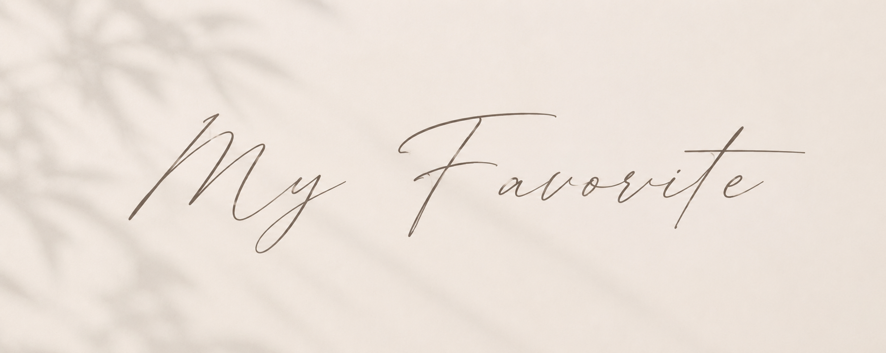
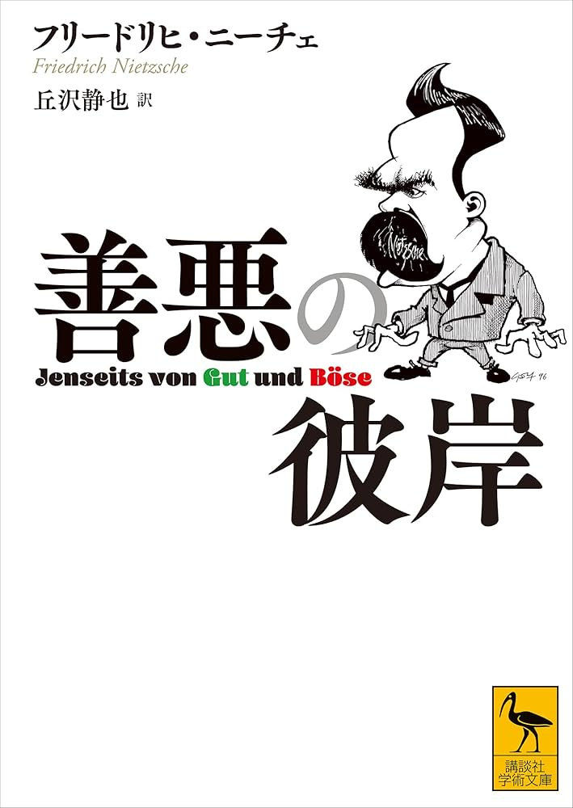
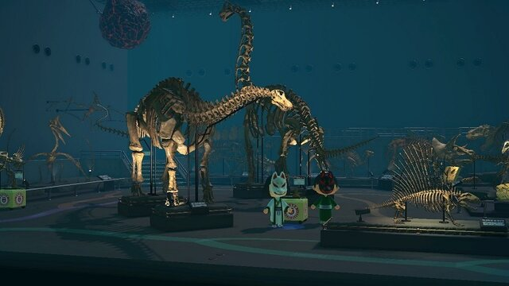
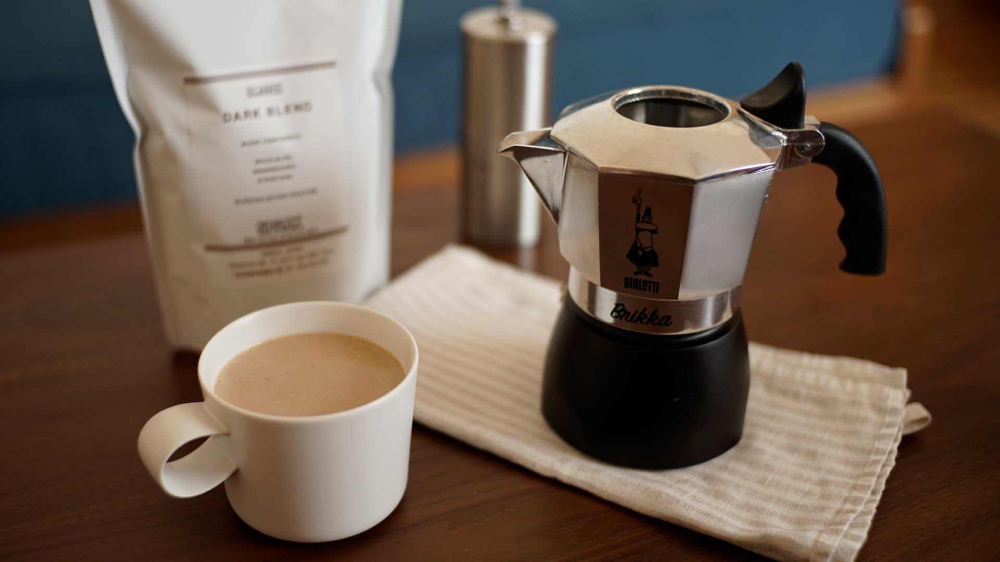

My Favorite.
ここでは、私の好きな
物や事、趣味などを
紹介していきます。
短くはありますが、
どうぞお付き合い下さい
Ayumu Tsukamoto

ここでは、私の好きな
物や事、趣味などを
紹介していきます。
短くはありますが、
どうぞお付き合い下さい
Ayumu Tsukamoto
| 音楽 | 常に音楽を聴いています。洋楽から邦楽、HIPHOPからクラシックまで、幅広く聞いています。 |
|---|---|
| 読書 | 時々、教養の為読書をします。最近読んだ本は、ニーチェ著「善悪の彼岸」です。 |
| 水族館巡り | 水族館以外にも、博物館や美術館にも行きます。品性や素養、感性を身につけるためと、雰囲気が好きです。 |
| コーヒー | 飲まない日はないくらい好きです。家にコーヒーマシンはあるのですが、サイフォンを買うか悩んでいます。 |
| ---------以下、これらの紹介をしていきます。 |
よく聞くのは洋楽で、特にbbno$が好きです。ちょくちょくTiktokやinstagramでバズってるのを見ますね。「1-800」「two」などの曲がおすすめです。ぜひ聞いてみてください。

ニーチェ著「善悪の彼岸」を最近読みました。当時のキリスト教の信仰に対し、ニーチェが投げかけた疑問、思想はとても面白いものでした。苦悩を味わうことが人を成長させ、不自由なく楽に暮らすことは人の成長を止めてしまいますね。

最近、美術館に行きました。あつまれどうぶつの森でずっとミュージアムを巡っていて、我慢できずに行きました。水墨画がたくさんあって、墨で表現される絵の迫力、繊細さは美しかったです。次は国立に行きたい。

毎日飲みます。薫り高くクリアで不快感のない後味のあるものが好きで、酸味の強いものはあまり好みません。最近将軍コーヒーで飲んだエスプレッソが美味しかったです。自分で拘って淹れて飲みたいし、サイフォンとマキネッタを買おうかと思っています。
テンポ感のいい、jazzyでおしゃれな曲です。Youtubeの方にMVが上がっているのですが、なんと作詞作編曲イラスト歌唱を本人がやっています。
全体的に落ち着いた、夕焼けの海が思い浮かぶような曲です。somuniaさんのカバーもおすすめです。
最近見たアニメのOPでした。ボーカルの歌い方や声がすごく好きです。
作成